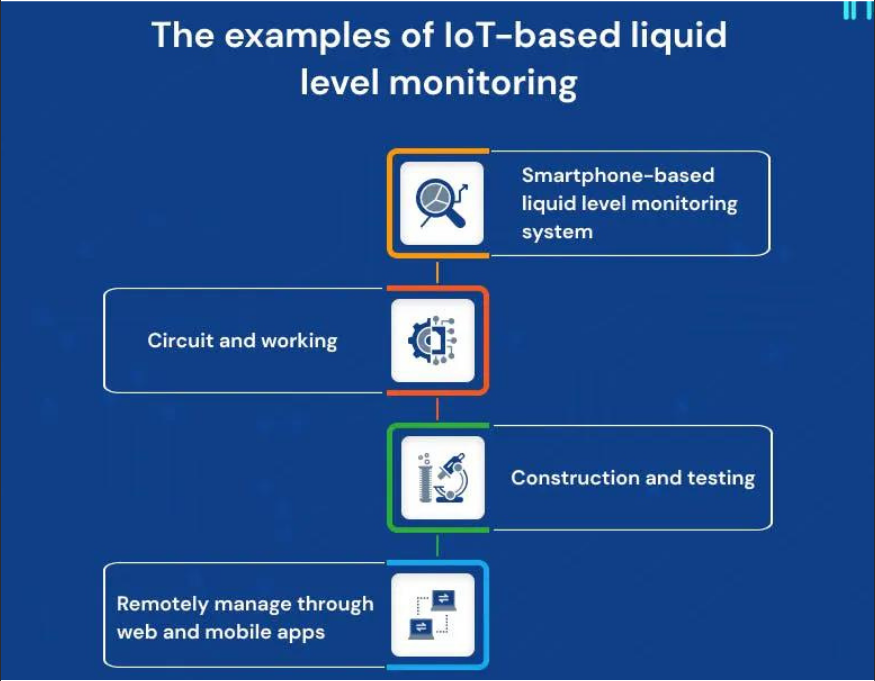

A liquid level monitoring system is an IoT-based project that allows users to remotely monitor the liquid level in a container. This system is beneficial in industries where liquids are stored in large containers or tanks, such as chemical plants or oil refineries. The system uses ultrasonic sensors to measure the liquid level and transmit the data to a microcontroller. The microcontroller processes the data and sends it to a web server via the internet. Users can then access the data from a web browser or mobile app and receive real-time updates on the liquid level.
The benefits of a liquid-level monitoring system include increased efficiency, cost-effectiveness, and improved safety. By monitoring the liquid level in a container, users can avoid overfilling or underfilling, which can result in costly spills or damage to equipment. The system can also track liquid usage, enabling users to optimize their processes and reduce waste. Additionally, the system can provide early warning of leaks or other issues, allowing for timely intervention and improved safety.
Liquid-level monitoring systems have applications in various industries, including chemical plants, oil refineries, water treatment plants, and food and beverage manufacturing. They can monitor the level of chemicals, oil, water, or other liquids in large containers or tanks. The systems can also be integrated with other IoT devices or methods, such as industrial automation or predictive maintenance, to improve overall efficiency and productivity.